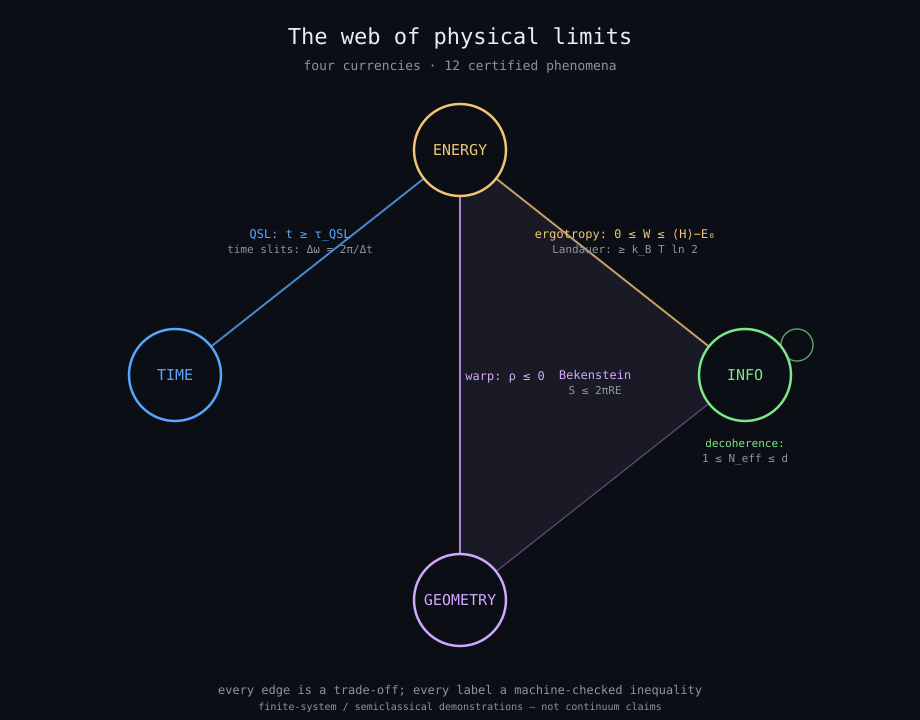
Each reel made an extraordinary claim. Stripped of the clickbait, each leaves a genuine, finite, exactly computable statement: a trade-off inequality among four currencies — energy, time, information/entropy, and geometry. Two keystones (Landauer, Bekenstein) connect the quantum side to thermodynamics and to geometry, closing the web.
The certificate ladder
Every label above is a discharged Lean 4 / Coq inequality (single labelled trust input, no holes).
| Quantum speed limit | time ↔ energy | t ≥ τ_QSL |
| Temporal double slit | time ↔ frequency | Δω = 2π/Δt, σ_tσ_ω ≥ ½ |
| Ergotropy / passivity | work ↔ entropy | 0 ≤ W ≤ ⟨H⟩ − E₀ |
| Decoherence / branching | information | 1 ≤ N_eff ≤ d |
| Landauer's principle | info ↔ energy | W_erase ≥ k_B T ln 2 |
| Bekenstein bound | info ↔ energy ↔ geometry | S ≤ 2π R E |
| Alcubierre energy cond. | energy ↔ geometry | ρ ≤ 0 (needs neg. energy) |
| Cherenkov cone | velocity ↔ geometry | cos θc = 1/(nβ), β > 1/n |
| Lieb–Robinson cone | information ↔ time | x(t) ≤ v_LR·t + ξ |
| Compton–Schwarzschild | mass ↔ geometry | R² ≥ R_s·λ_C = 2 l_P² |
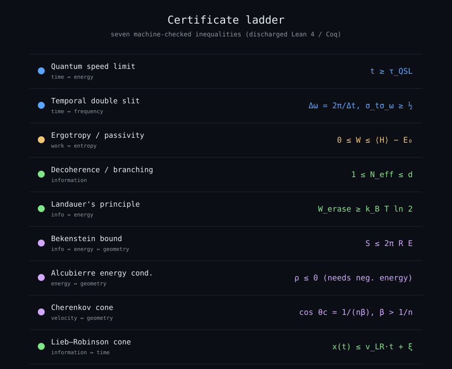
The cosmic mass–radius diagram
The whole web has a global shape. Plot every object by mass and size:
the lower-left is sealed off by two certified limits — the
Schwarzschild radius (pack tighter and you are a black hole) and the
Compton wavelength (localize tighter and the quantum
vacuum pair-produces). They cross at the Planck point,
and the identity R_s·λ_C = 2 ℓ_P² holds for every mass — a
machine-checked inequality (R² ≥ R_s·λ_C).
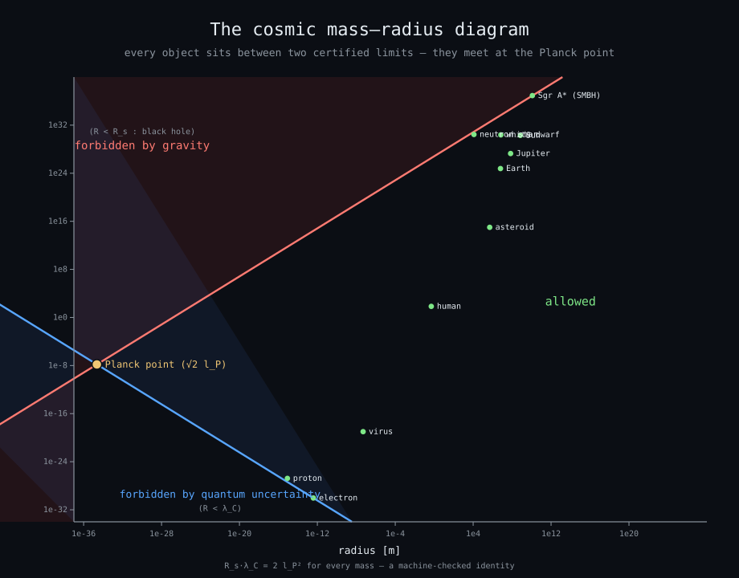
The phenomena, one figure each
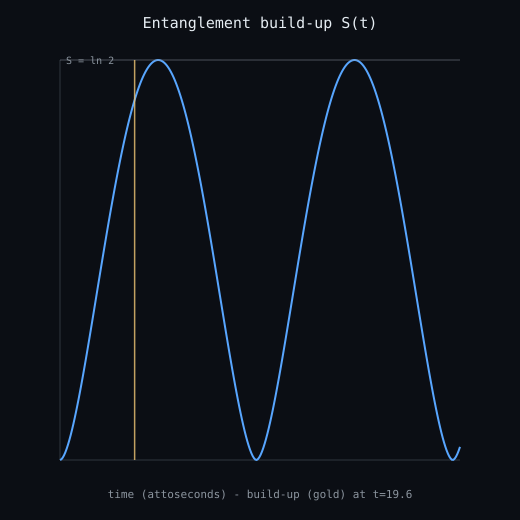
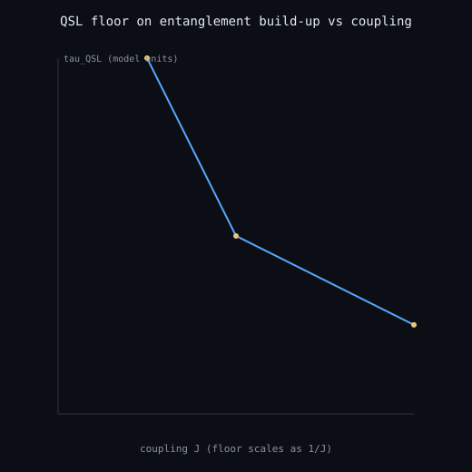
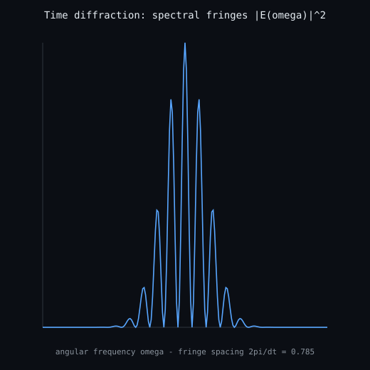
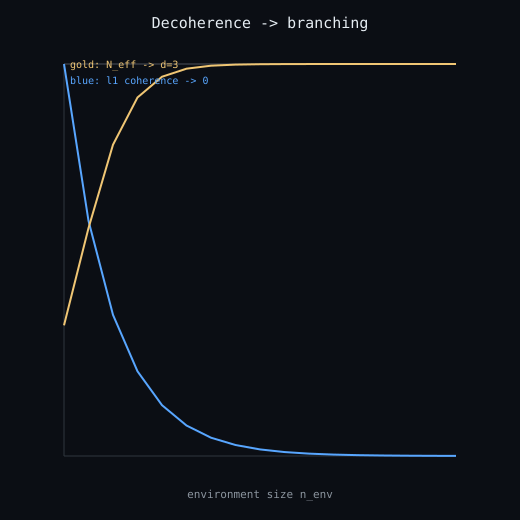
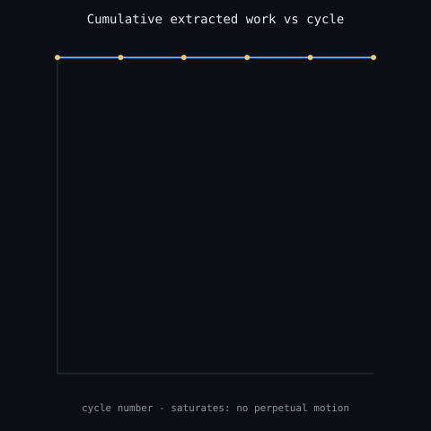
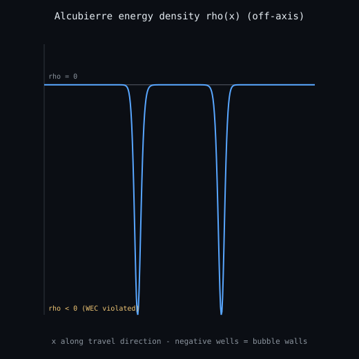
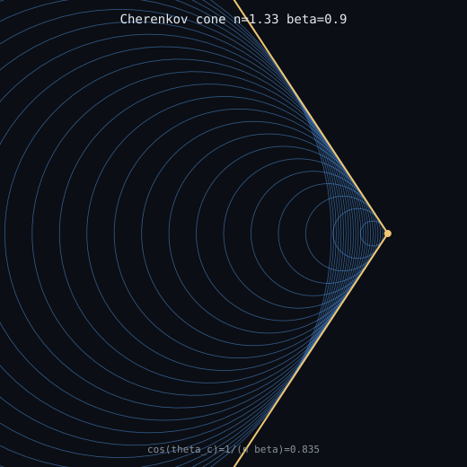
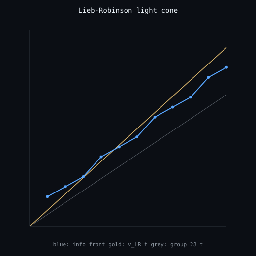